Creëer de ruimte waar u altijd van gedroomd heeft. Een naadloze uitbreiding van uw woning, gerealiseerd met de hoogste bouwstandaarden.
Een aanbouw of uitbouw is een waardevolle investering in uw wooncomfort en de waarde van uw pand. Bij Van der Meer Dienstengroep nemen we het volledige traject uit handen, van de eerste schets tot de laatste lik verf.
Of het nu gaat om een kantoor aan huis, een luxe berging of een volwaardige uitbouw, een duurzaam resultaat begint bij een feilloos constructief ontwerp. Wij bouwen uitsluitend met premium materialen voor een maximale levensduur en optimale isolatiewaarden.
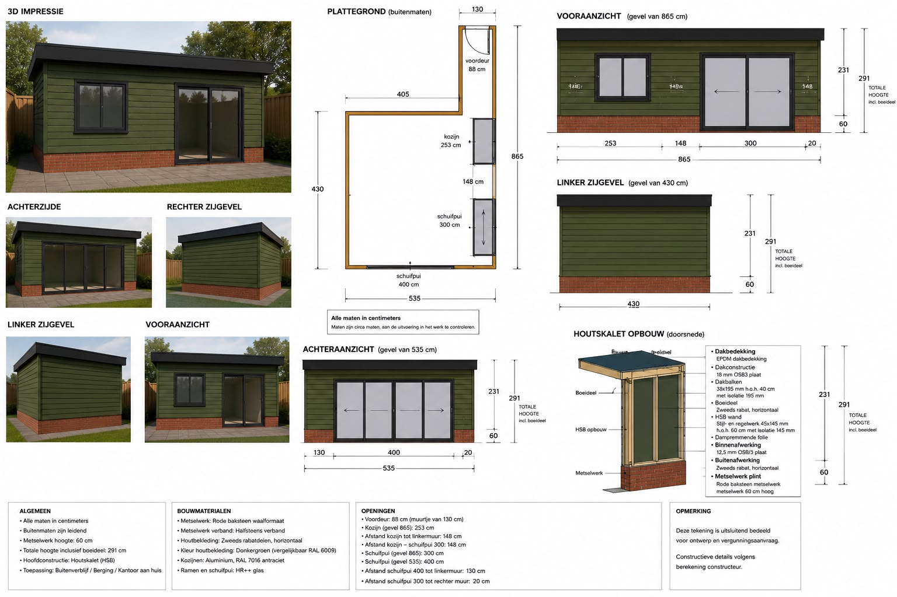
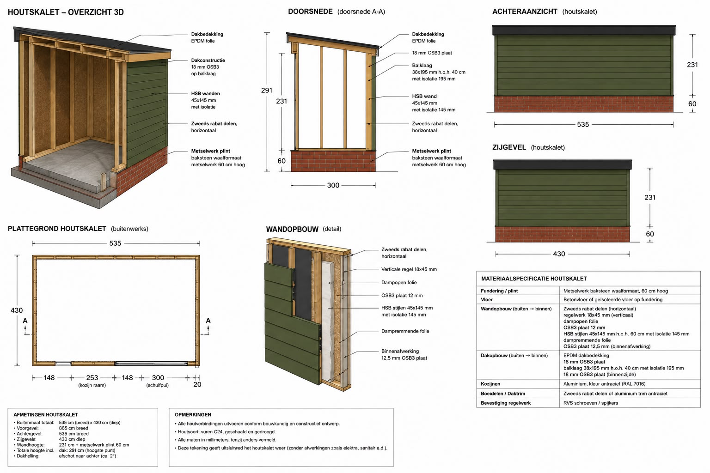
Van technische tekening tot de uiteindelijke realisatie. Hier ziet u het resultaat van ons vakmanschap in de praktijk: een prachtig afgewerkt bijgebouw dat perfect opgaat in de omgeving. Let op de strakke afwerking van de plint en het hoogwaardige houtwerk waar onze vakmensen met trots aan werken.
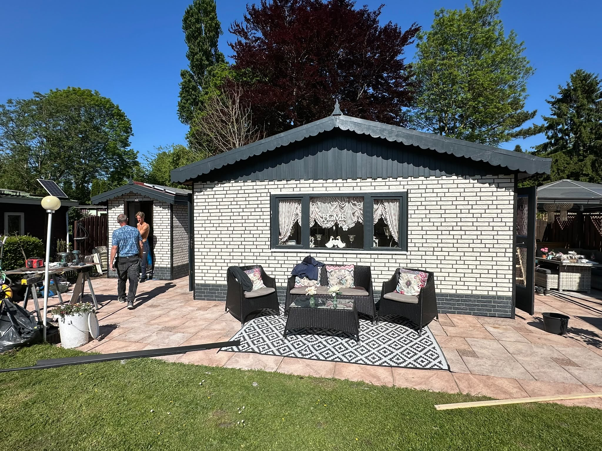
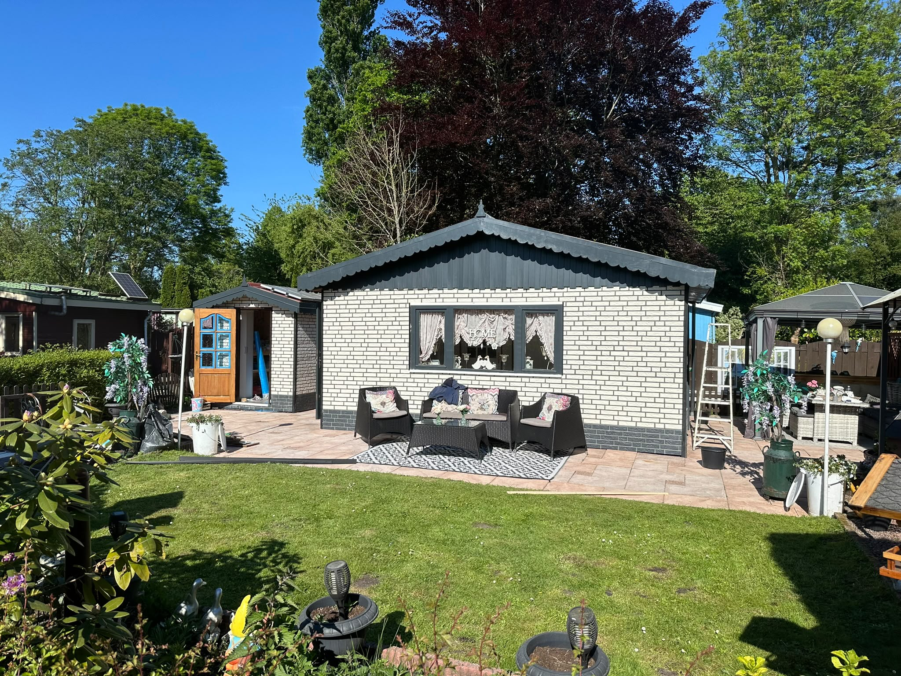
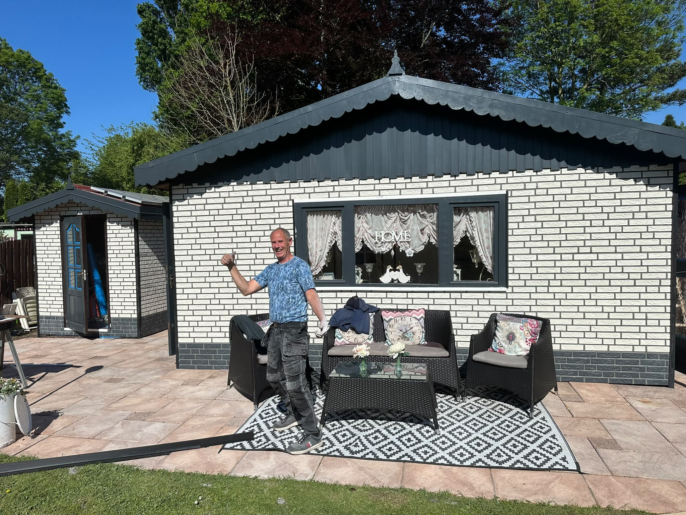
Een perfect voorbeeld van een naadloze aanbouw. Hier hebben we een moderne, lichtovergoten uitbreiding gerealiseerd die prachtig contrasteert met de bestaande klassieke architectuur. De combinatie van het strakke bakstenen fundament, de warme, natuurlijke houten gevelbekleding en de royale glazen schuifpuien zorgt voor een zee aan daglicht en een optimale verbinding met de buitenruimte.
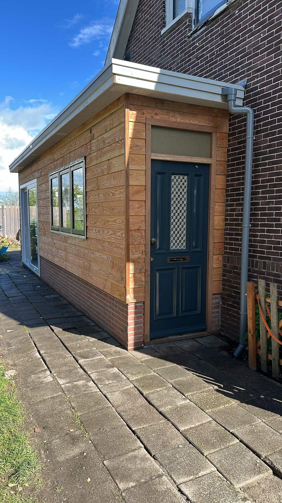
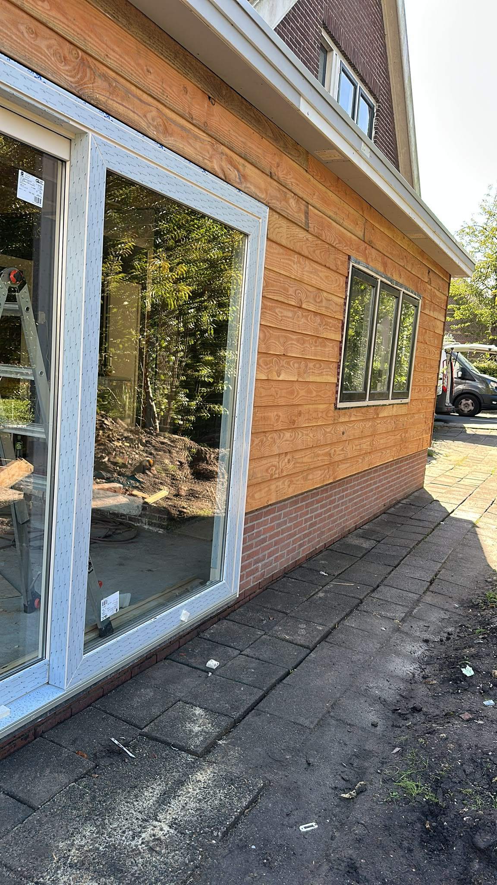
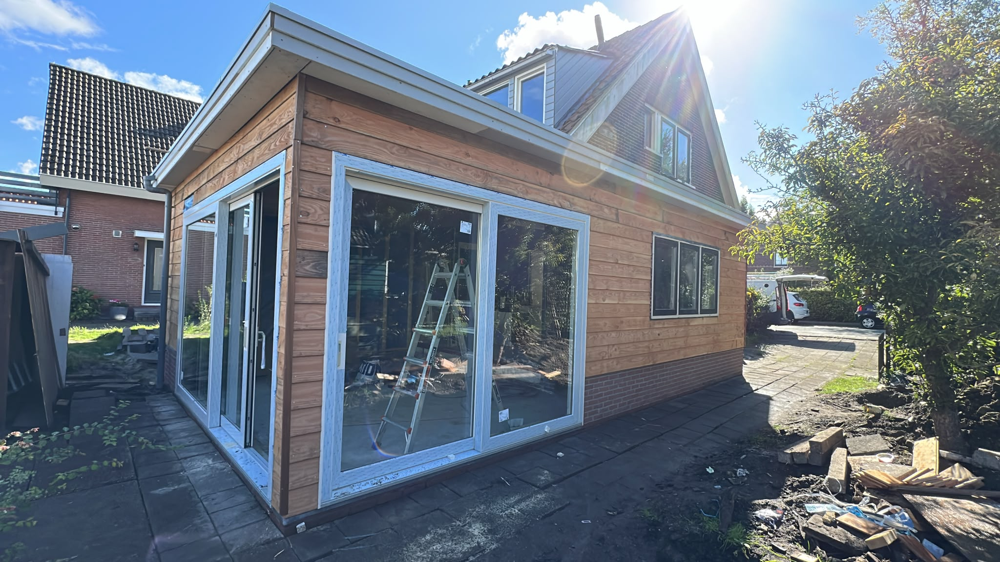
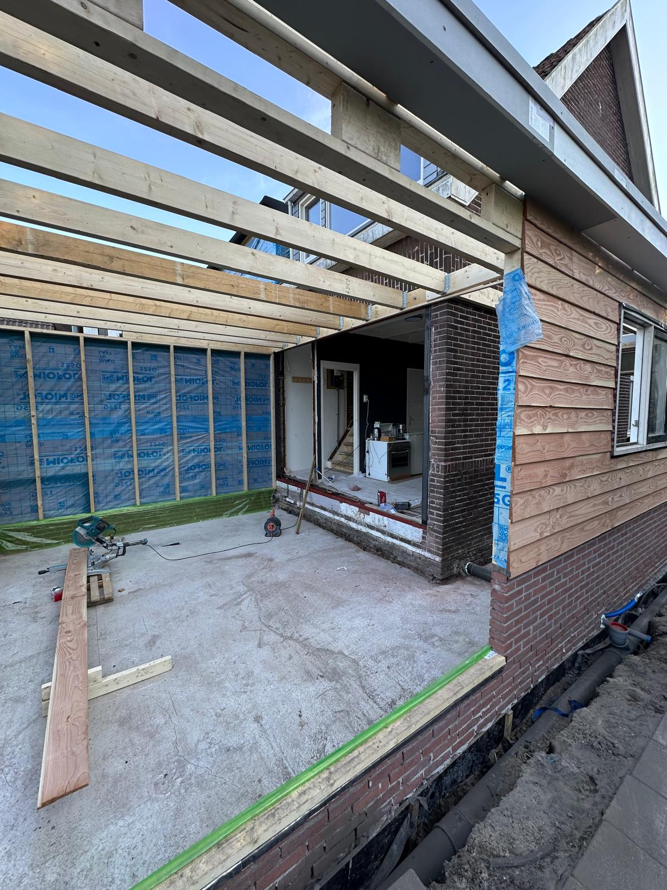
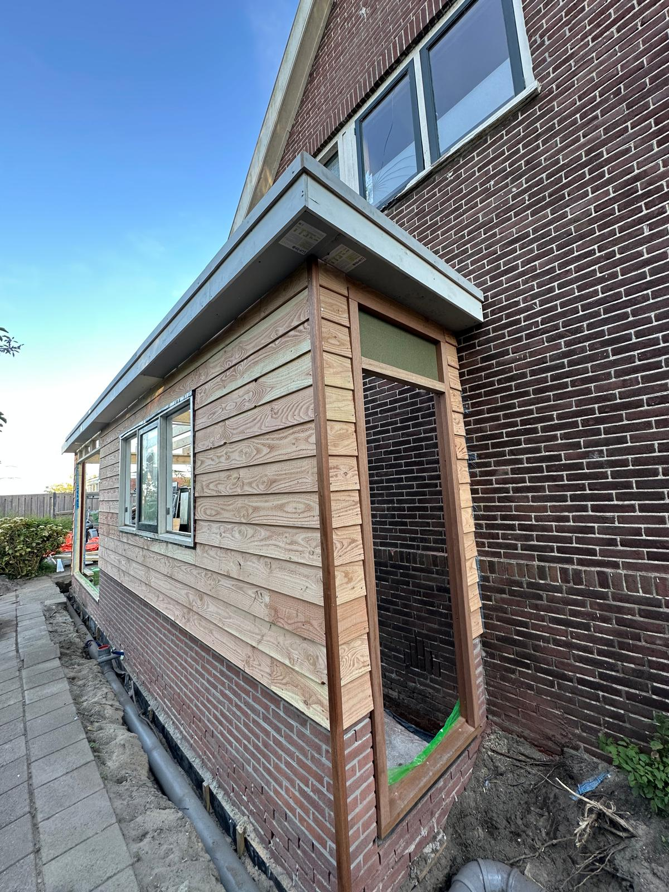
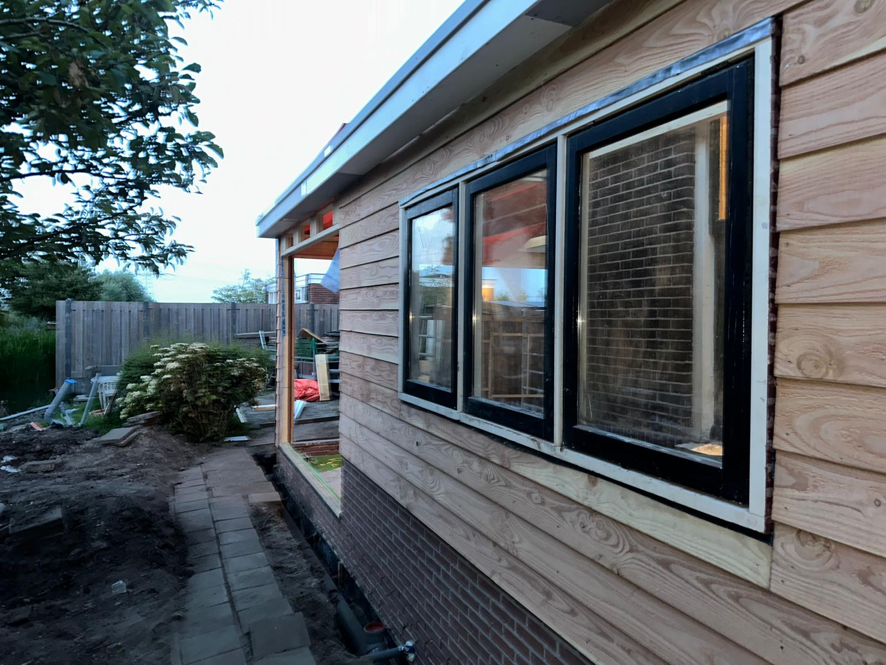
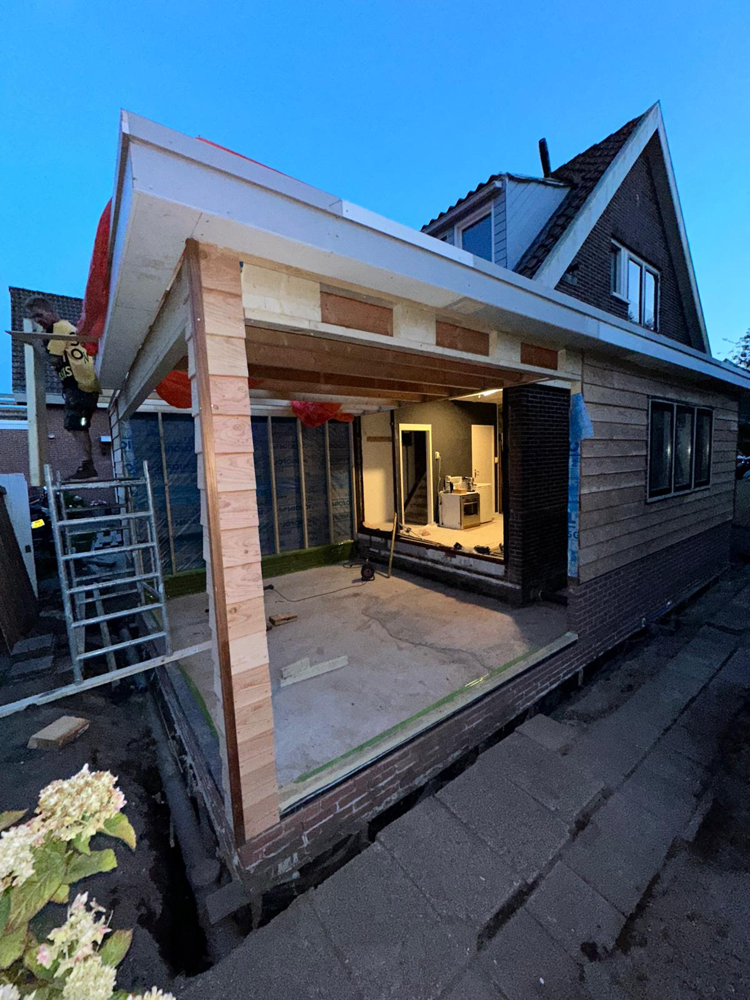